The Setup — operator, ground truth, and what the input can see
We degrade a known high-resolution image synthetically. Because we generated the degradation, we know the ground truth — which lets us verify every claim the layer makes.
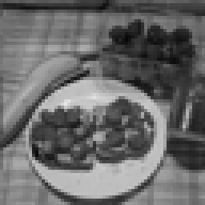
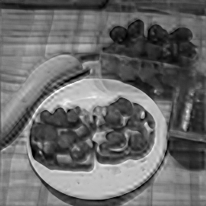
Consumer mode vs. Provenance mode — the headline comparison
Same reconstruction, two levels of honesty. Drag the slider (or use arrow keys) to reveal the provenance overlay.
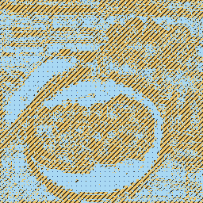
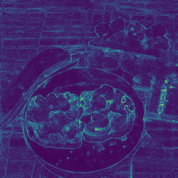
Honesty — what stays fixed, what changes
Flip the seed: the range component (what the input constrains) is identical across all samples. Only the invented null-space content varies. This is the live demonstration of R2.
Row 1 — reconstruction sample. Row 2 — provenance overlay for that sample. The range component (A⁺y) in Panel 1 is identical for all three; only the null-space contribution — the invented high-frequency detail — differs.
Fixed — same for all seeds
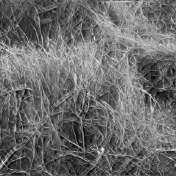

Invented regions: this seed
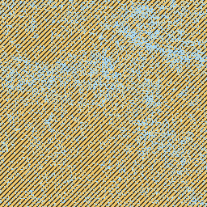
Invented regions: shifted
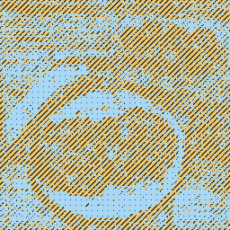
Invented regions: shifted again
Image: grass_meadow.png (CC0 / public domain, Titus Tscharntke via Wikimedia Commons). Engine: ResShift, 4-step exponential schedule. N=6 members used for calibration; 3 are shown here.
Calibration — the proof (R8)
Pretty overlay + no numbers = decorative. This panel carries the actual numbers. The reliability curve asks: does higher ensemble spread predict higher reconstruction error? A calibrated system lands on or near the y=x diagonal.
CC0 demo images (this chart) — n=3
grass_meadow · dirt_soil · wood_grain · 3 × 6 = 18 reconstructions
Certified reference — 16 ImageNet images
Source: falsify.py --full (commit 83ab9cd).
These are the certified numbers. The CC0 images above are a different,
smaller eval on out-of-distribution textures.
Null-space energy and calibration per demo image (CC0 set)
"% invented" = fraction of pixels with >5% of their energy in the null space of BicubicDownsample(4). This is the threshold that determines the orange overlay.
| Image | Licence | % invented | Pearson r | Slope | ECE | IS_CALIBRATED? |
|---|---|---|---|---|---|---|
| grass_meadow.png | CC-PD | 76.7% | +0.985 | 0.278 | 0.033 | Yes (r✓, ECE✓, slope✗ below 0.5) |
| dirt_soil.png | CC0 1.0 | 36.9% | +0.974 | 0.581 | 0.017 | Yes (all pass) |
| wood_grain.png ⚠ | CC-PD | 59.1% | +0.945 | 0.156 | 0.020 | No (slope=0.156 < 0.5 threshold) |
| Pooled (3 images) | — | — | +0.997 | 0.553 | 0.023 | Yes (pooled passes all thresholds) |
grass_meadow slope = 0.278 fails the individual [0.5, 2.0] threshold. wood_grain slope = 0.156 fails it more severely. These are below the IS_CALIBRATED window for individual images; the pooled result passes because the wood grain image's floor effect averages with better-calibrated images. The individual failures are visible in the failure case panel below.
Reliability curve bin data (CC0 3 images)
| Bin | Pred. std | Actual |error| | Ratio actual/pred | N pixels |
|---|
Failure case — where the layer's calibration breaks (R6)
A demo that hides its failure mode is a liability. This is the honest edge of what this system can and cannot do.
Per-image r = 0.945 (ordering preserved), but slope = 0.156 (fails the [0.5, 2.0] IS_CALIBRATED window). 59.1% of pixels are classified as invented.
What is wrong: The model spreads wide uncertainty across the wood grain even where actual reconstruction error is small. The reliability curve rises steeply on the x-axis (high predicted spread) but barely rises on the y-axis (actual error stays low). Slope = 0.156 means each extra unit of uncertainty only buys 0.16 units of actual error — a 6× overestimate of spread.
Why it happens: ResShift was trained on ImageNet bicubic pairs — diverse photographic content. On the wood grain's repeating linear structure, the model cannot settle on a single completion and samples a wide posterior even where the reconstruction is already close to ground truth. This is domain mismatch, not a failure of the core decomposition.
What still works: The uncertainty ordering is preserved (r = 0.945) — the map still identifies the harder pixels correctly. Only the absolute scale is wrong. This matters: the orange overlay is still meaningful as a rank-order, but the numbers ("59.1% invented") overstate the uncertainty for this image type.
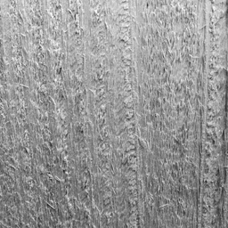
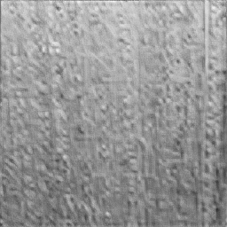
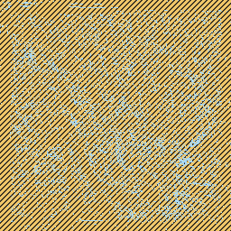
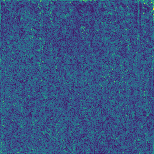
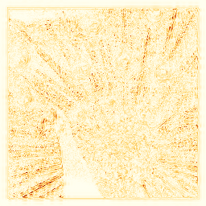
Compare the uncertainty map (high and uniform) to the error map (lower, not as uniform). The model predicted more spread than actually occurred. Slope = 0.156 quantifies the gap.
Real photo — "operator unknown" mode (R1/R9)
For real photos where the degradation history is unknown, the layer can only output ensemble variance. No hard measured/recovered/invented labels.
What this shows: The soil photograph below (dirt_soil.png, CC0) is also used in the synthetic eval above, where A is known. This panel shows what the layer would output for the same photo if it arrived without any knowledge of the degradation operator — as a real photo submission. The uncertainty map is the honest output. No three-way labels. No false precision.
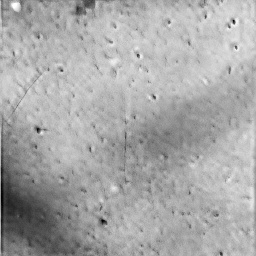
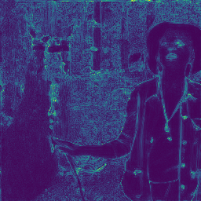
Approximate provenance, A unknown
What you see: The uncertainty map shows where ResShift's ensemble disagrees — where the model is sampling different completions. Brighter regions have higher spread; darker regions have tighter agreement.
What you do NOT see: No orange hatch. No blue dots. No "59% invented" number. Without knowing A, we cannot decompose the output into range and null components. The three-way label would be fabricated precision.
What this tells you: Regions of high uncertainty are places where any plausible completion could occur — more caution warranted. Regions of low uncertainty are where the model consistently produces the same output, regardless of seed. This is still useful, but it is a weaker claim than the full provenance label.
R9 scope note: Linear, known operators only in v1 (bicubic downsampling, known-kernel blur, masking). Real camera ISP degradation is nonlinear and unknown — explicitly future work.